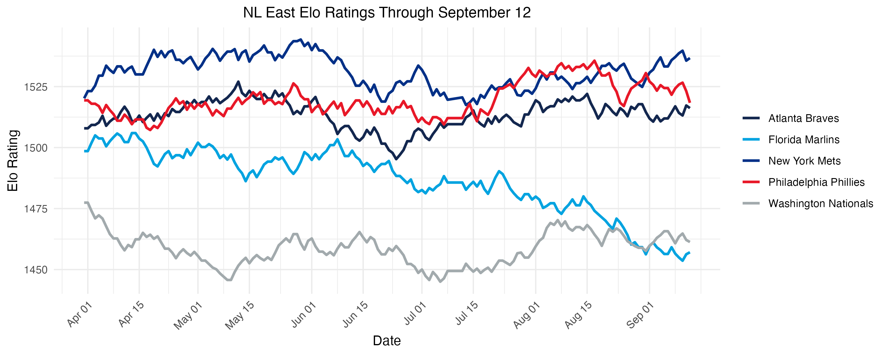

Collapse of the 2007 Mets
Coming into the 2007 season, the Mets hoped to expand on their success from the previous year, which ended in a Game 7 loss to the Cardinals in the NLCS. A combination of aging starting pitchers Tom Glavine, Orlando Hernández, and Pedro Martinez, injuries to Duane Sánchez and Juan Padilla, the questionable trade of Heath Bell to the Padres left fans wondering if their young pitchers Óliver Pérez and John Maine were sustainable. However, these fears seemed to be put to rest early in the season, coming out of the gate strong.
Sitting at 34-18, the Mets had the best record in the National League at the end of May, trailing by more than 1 game only once on April 11. Despite a slide in June and early July, they still led a weak National League East by 2 games at the All-Star Break. A 35-23 stretch immediately following the break put the Mets 7 games up on the second-place Phillies on September 12. With 13 of their final 17 games against the 4th place Nationals and 5th place Marlins, surely the Mets were a lock as the NL East champions for a second consecutive year.
But then, the wheels started coming off. A three-game sweep at home at the hands of the Phillies cut their lead to 3.5 games with 14 remaining. After losing two games to the Nationals, the Mets followed up with 4 wins in their next 5 games, all on the road. Taking a 2.5 game lead over the Phillies into the final week of the season, the Mets appeared poised to hang on. After all, they were finishing with a 7-game homestand: 3 games against the Nationals, a make-up game against the Cardinals, and a 3-game set against the Marlins.
Despite the seemingly easy slate, the Mets lost the first 5 games of the homestand while the Phillies won 3 of 4, putting the Mets in second place for the first time since May 15. The following day, a 13-0 blowout win coupled with a Phillies loss put the teams tied atop the division at 87-73 with one game left. A win over the Marlins would force a tiebreaker at worst and secure the division title at best. The next day, 41-year-old Tom Glavine would surrender 7 first inning runs, leading to an 8-1 loss. 80 miles away, the Phillies would defeat the Nationals 6-1, completing the comeback and snatching the division title from the Mets.
So how bad was the Mets’ collapse? We simulated the remainder of the 2007 season after the conclusion of each day of play 10,000 times. Going into the beginning of the season, the Mets and Phillies were effectively equal in strength with the Mets holding a slight 2-point lead in Elo rating and both winning the division in about one-third of all simulations.
| Team | Preseason Elo | Simulated Record | Division Champion |
|---|---|---|---|
| New York Mets | 1520 | 86-76 | 33.58% |
| Philadelphia Phillies | 1519 | 86-76 | 34.44% |
| Atlanta Braves | 1508 | 83-79 | 18.08% |
| Florida Marlins | 1499 | 81-81 | 11.46% |
| Washington Nationals | 1477 | 75-87 | 2.44% |
While the Phillies would eventually win the division, the Braves were the Mets’ bigger competitor early in the season. Alternating between first and second place with the Braves through mid-May, the Mets appeared to be the strongest team in the NL East. By the time they took sole control of the division on May 16, the Mets were 12-4 in games decided by at least 5 runs, while the Braves were 4-4 in the same type of games in that span. This combination allows the Mets to push their Elo rating as many as 17 points higher than the Braves. Meanwhile, the Phillies’ position in the standings after 40 games was not representative of their play. Despite being 20-20 and 5.5 games out of first place, they had improved their Elo rating to 1523 by going 6-3 in blowouts but only 2-5 in one-run games.
At the end of May, the Mets were the second-best team in baseball both in terms of record (34-18) and Elo rating (1543), trailing only the eventual World Series champion Boston Red Sox (36-16, 1544). Cracks emerged in June and July, enduring a 14-19 stretch into the All-Star game, but they still led the second-place Braves by 2 games. Lurking 4.5 games behind, the Phillies were deceptively strong. With two brief exceptions, they passed the Braves for good for the second highest Elo rating in the division on June 5 (1515) and would climb ahead of the Mets for the first time on July 27 with a rating of 1527 to the Mets’ 1521.
Not until August 25 and again on September 12 did the Mets pull 7 games clear of second place. At the end of play on the latter with a record of 83-62, the Mets held a nearly insurmountable lead according to the simulation, winning the division 99.30% of the time. The Mets were favored in each of their remaining 17 games, facing opponents with an average Elo rating of 1471. Meanwhile, with one more game in Colorado before an important 3-game series at Shea Stadium, the 76-69 Phillies were likely more focused on winning the Wild Card, sitting 2.5 only games behind the Padres. The Phillies also had to contend with a slightly more difficult schedule the rest of the season – the average Elo rating of their competition was 1493 with 6 of their 7 most difficult games on the road. Despite the challenges, the simulation still gave the Phillies a slim 0.67% chance of winning the division. (At 9.5 games out, the Braves came back to win the NL East the other 0.03% of the time.) A comeback by the Phillies was possible, but looking bleak.
| Date | New York Mets | Philadelphia Phillies | ||||
|---|---|---|---|---|---|---|
| Opponent | Opp. Elo | Win Prob. | Opponent | Opp. Elo | Win Prob. | |
| 9/13/07 | vs. COL | 1519 | 54.09% | |||
| 9/14/07 | vs. PHI | 1522 | 56.35% | @ NYM | 1537 | 43.65% |
| 9/15/07 | vs. PHI | 1523 | 56.06% | @ NYM | 1536 | 43.94% |
| 9/16/07 | vs. PHI | 1525 | 55.50% | @ NYM | 1534 | 44.50% |
| 9/17/07 | @ WAS | 1460 | 55.95% | @ STL | 1479 | 52.69% |
| 9/18/07 | @ WAS | 1464 | 54.82% | @ STL | 1478 | 53.17% |
| 9/19/07 | @ WAS | 1466 | 54.43% | @ STL | 1476 | 53.58% |
| 9/20/07 | @ FLA | 1455 | 56.31% | @ WAS | 1463 | 55.31% |
| 9/21/07 | @ FLA | 1456 | 56.02% | @ WAS | 1462 | 55.63% |
| 9/22/07 | @ FLA | 1454 | 56.56% | @ WAS | 1460 | 56.17% |
| 9/23/07 | @ FLA | 1451 | 57.25% | @ WAS | 1459 | 56.55% |
| 9/24/07 | vs. WAS | 1461 | 64.06% | |||
| 9/25/07 | vs. WAS | 1466 | 62.77% | vs. ATL | 1524 | 55.39% |
| 9/26/07 | vs. WAS | 1467 | 62.35% | vs. ATL | 1526 | 54.60% |
| 9/27/07 | vs. STL | 1469 | 61.76% | vs. ATL | 1524 | 55.16% |
| 9/28/07 | vs. FLA | 1457 | 63.06% | vs. WAS | 1470 | 62.94% |
| 9/29/07 | vs. FLA | 1459 | 62.32% | vs. WAS | 1468 | 63.54% |
| 9/30/07 | vs. FLA | 1456 | 63.23% | vs. WAS | 1470 | 62.94% |
Not only did the Mets hold a 7-game lead over the second-place Phillies, but they were also projected to expand their lead in the homestretch. In the simulation, the Mets averaged 10.2 wins to the Phillies 9.0. Had the Mets simply played as expected, the Phillies could have at best tied the Mets atop the NL East with a perfect 17-0 finish. Even 7 wins (0.412 winning percentage), which the Mets accomplished in 96.75% of simulations, would have forced the Phillies to win at least 14 of their remaining 17 games, a feat they achieved in only 1.20% of simulations. Had the Mets played baseball about as well as the Tampa Bay Devil Rays, MLB’s worst team in 2007 (66-96, 0.407), they would have likely been the NL East champions.
What ensued was a combination of statistical oddities that few could have seen coming. On the Mets’ off-day, the Phillies beat the Rockies to cut the division lead to 6.5 games. The Phillies then proceeded to sweep the Mets in New York, trimming their lead to only 3.5 games. To make matters worse, the Mets dropped their next two games at home to the Nationals while the Phillies traveled to St. Louis and took the first two games of the series. In just six days, the Mets’ division lead had gone from 7 games on September 12 to 1.5 on September 18. Adding insult to injury, the Phillies overtook the Mets as the statistically best team in the division according to Elo during this stretch. Even still, the Mets won the division in 71.12% of simulations at this point by virtue of a more favorable schedule. Wins in 4 of their next 5 games increased the Mets’ lead by only a single game, but helped in running out the clock. The Phillies had only 6 games to make up 2.5, improving the Mets’ chances of winning the division back up to 92.32% on September 23.
With both teams spending the last week of the season at home, the Mets still controlled their own destiny. However, a sweep at the hands of the fourth place Nationals not only cut their lead to a single game, but dropped the Mets’ Elo rating to the third best in the division behind the Braves. The team was floundering; only their strong start to the season was keeping them in the division race at this point. A fourth consecutive loss in a make-up game against the NL Central leading Cardinals coupled with a Phillies win on September 27 not only tied the division, but made the Phillies the division favorites for the first time all season, winning in 65.39% of the simulations. The Mets’ situation became even more dire, losing to the last-place Marlins while the Phillies defeated the Nationals. This put the Phillies in sole possession of first place for the first time all season and gave them an 84% chance of winning the NL East. Had the Mets simply played to expectations during this 5-game losing streak, they would have won 3.2 games, enough to guarantee, at worst, a tie after game 162. The Phillies gave the Mets some life in the penultimate game, losing to the Nationals while the Mets broke their losing streak
| Date | New York Mets | Philadelphia Phillies | Division | ||||
|---|---|---|---|---|---|---|---|
| Opponent | Result | Postgame Elo | Opponent | Result | Postgame Elo | ||
| 9/13/07 | vs. COL | W 12-4 | 1522 | NYM up 6.5 | |||
| 9/14/07 | vs. PHI | L 3-2 | 1536 | @ NYM | W 3-2 | 1523 | NYM up 5.5 |
| 9/15/07 | vs. PHI | L 5-3 | 1534 | @ NYM | W 5-3 | 1525 | NYM up 4.5 |
| 9/16/07 | vs. PHI | L 10-6 | 1531 | @ NYM | W 10-6 | 1527 | NYM up 3.5 |
| 9/17/07 | @ WAS | L 12-4 | 1527 | @ STL | W 13-11 | 1529 | NYM up 2.5 |
| 9/18/07 | @ WAS | L 9-8 | 1526 | @ STL | W 7-4 | 1530 | NYM up 1.5 |
| 9/19/07 | @ WAS | W 8-4 | 1528 | @ STL | L 2-1 | 1530 | NYM up 2.5 |
| 9/20/07 | @ FLA | L 8-7 | 1527 | @ WAS | W 7-6 | 1531 | NYM up 1.5 |
| 9/21/07 | @ FLA | W 9-6 | 1529 | @ WAS | W 6-3 | 1533 | NYM up 1.5 |
| 9/22/07 | @ FLA | W 7-2 | 1531 | @ WAS | W 4-1 | 1534 | NYM up 1.5 |
| 9/23/07 | @ FLA | W 7-6 | 1532 | @ WAS | L 5-3 | 1532 | NYM up 2.5 |
| 9/24/07 | vs. WAS | L 13-4 | 1527 | NYM up 2.0 | |||
| 9/25/07 | vs. WAS | L 10-9 | 1526 | vs. ATL | L 10-6 | 1529 | NYM up 2.0 |
| 9/26/07 | vs. WAS | L 9-6 | 1523 | vs. ATL | W 5-2 | 1531 | NYM up 1.0 |
| 9/27/07 | vs. STL | L 3-0 | 1520 | vs. ATL | W 6-4 | 1533 | Tied |
| 9/28/07 | vs. FLA | L 7-4 | 1518 | vs. WAS | W 6-0 | 1535 | PHI up 1.0 |
| 9/29/07 | vs. FLA | W 13-0 | 1521 | vs. WAS | L 4-2 | 1533 | Tied |
| 9/30/07 | vs. FLA | L 8-1 | 1517 | vs. WAS | W 6-1 | 1535 | PHI up 1.0 |
The final day of the season would prove to be among the most exciting in MLB history. With both the Mets and Phillies tied at 88-73, the Phillies had a slight edge in the simulation, winning the division 53.44% of the time – 23.04% outright and 30.40% in a one-game playoff. Facing the weaker opponent, the Mets were slightly more likely to win outright (23.50%), but were at a disadvantage in the playoff that would have been played in Philadelphia. However, despite all their challenges, the Mets were also still alive for the Wild Card. Wins by both the Mets and Phillies could have also forced a tiebreaker for the Wild Card spot. A Padres’ loss would leave them at 89-73 while a win by the Rockies over the 90-71 Diamondbacks would also give them 89 wins, setting up a three-way Wild Card tie that could only be broken after the NL East champion was crowned. Furthermore, a Padres’ win combined with a Diamondbacks’ loss would have created a tie atop the NL West. Ironically, the only National League playoff spot that had been clinched was by the 85-win Cubs, who were locked into the 3-seed and would play October baseball while two teams with better records would sit at home.
| Team (Record) | Division Champ (Outright) | Division Champ (Tiebreaker) | Wild Card (Outright) | Wild Card (Tiebreaker) | No Playoffs |
|---|---|---|---|---|---|
| Phillies (88-73) | 23.04% | 30.40% | 3.53% | 43.03% | |
| Mets (88-73) | 23.50% | 23.06% | 4.25% | 49.19% | |
| D-backs (90-71) | 69.75% | 12.92% | 15.45% | 1.88% | |
| Padres (89-72) | 17.33% | 33.27% | 29.95% | 19.45% | |
| Rockies (88-73) | 13.56% | 86.44% |
Despite having slightly better odds than not of making the playoffs, the Mets pulled themselves completely out of contention with an 8-1 loss to the last-place Marlins while the Phillies would win Game 162 and the division. A Mets’ win would have created the ultimate tie-breaking scenario with 4 teams tied at 89-73 as the Padres would lose and the Rockies would win. The collapse was complete. The Mets had no one to blame but themselves. They had a 7-game lead with 17 games to play against the second-weakest remaining schedule in baseball, trailing only the Cubs whose opponents’ average Elo rating was 1465.
In a sport where Elo ratings change so slowly due to each individual game carrying low importance, it’s almost unfathomable how a team in first-place for 159 days and competing for a division title could drop 15 points at home in one week. The Mets going 5-12 or worse over their last 17 games occurred in only 0.91% of simulations. While the Mets certainly played terrible baseball down the stretch, the Phillies did just as much to win the division. They picked up 17 Elo points over 17 games and went 13-4 down the stretch. A record that good or better happened 4.16% of the time. Although neither event was implausible, the combination of the two was what made the Mets’ collapse so unprecedented. Out of the 67 simulated seasons where the Mets blew their 7-game lead, they were still the wild card team in 42 of them. Not only did the Mets fall victim to a streaking division rival at the end of the season, they also lost out to a blazing hot Rockies team that would ride a 13-1 regular season finish all the way to the World Series.